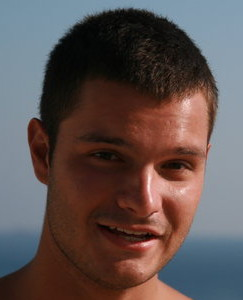

People of openSUSE: Mihnea Dobrescu-Balaur
 * Nickname: mihneadb / used to be CrAzzY_ in online games
- Favorite season: Winter
- Motto: Not sure if it’s my motto, but: “You must be the change you want to see in the world.” It’s Gandhi’s.
Please introduce yourself!
Hello! My name is Mihnea and I’m a 19 year old student from Bucharest, Romania.
Tell us about the background to your computer use.
I’ve had a computer (not the same one, of course!) since I was very young, something like 5 years old, I think and I’ve always been interested in technology. I went to a computer science/programming oriented high school and now I’ve just finished my first year at the Faculty of Automatic Control and Computers @ the Polytechnic University of Bucharest. I’ve also taken some various extra-curricular courses, like a Linux one, servers etc. Now I’m taking a Java / OOP course during the summer holiday.
When and why did you start using openSUSE/SUSE Linux?
A few years ago, when I was trying various distributions. I haven’t used only openSUSE since, but it is one of my favourite distros because I feel it is somehow more polished than other distros around.
When did you join the openSUSE community and what made you do that?
About before the GSoC research period started. I was interested to see how the people behind openSUSE are like. Also, I didn’t join before because I felt I was too much of a beginner and that I couldn’t really contribute. Stupid thought, I guess.
In what way do you participate in the openSUSE project?
I’m working on the bug reporting tool for my gsoc project and if I have the chance I try to help people on IRC.
What especially motivates you to participate in the openSUSE project?
I like the community and the general approach of openSUSE. Oh, and my favourite colour is green! :)
Tell us about your GSoC project?
Oh, it’s awesome. Everything works! How cool is that? :)
My project consists of making a bug reporting tool that can help users submit reports easily. Also, it can help screening teams’ members beacause it also finds maintainers and bugowners.
Its main functionalities are splitted in four categories at the moment:
aid – helps the user to determine which is the 'suspected' package that causes a problem
gather – scans the system for relevant data to provide in a bug
report or to someone that helps, via IRC let's say
query – search the Bugzilla instance for bug reports that fit given
keywords and sorts them by relevance
submit – gets input from the user and submits the bug report to Bugzilla
Underlying nice stuff:
duplicate search – this feature was very wanted from what I could tell. I managed to implement it using a sorting by relevance of bug reports. From what I could see in the tests I've done, it works great. Also, it supports “excluded words” functionality.
get assignee + maintainers – I use data from the rpm and then get the relevant information via OBS, using it's python bindings, not the shell tool
check account – verifies that the user has a valid account and if so, it stores the user's credentials in a hidden file, base64 encrypted and pickled to make them not human readable; if the data is stored, the user isn't prompted again for username & password when interacting with bugzilla
globbing : when searching for a package, you can also do something like search for ' kde* ' and it will show you what packages match
searching local rpm database: it also looks in 'provides', not only in 'name'
I’ve also implemented some other nice stuff but I don’t want to bore the audience. You can find everything in the repo here: https://github.com/mihneadb/suse_bug_reporter
When do you usually spend time on the openSUSE project?
During the day, mostly, but I always check my e-mail on the phone. Three words to describe openSUSE? Or make up a proper slogan!
Green, polished, structured.
What do you think is missing or underrated in the distribution or the project?
Some nice auto completion for zypper (I mean, for package names and stuff like that). Also, I feel that sometimes it could use more packages in the repos / in the OBS. What do you think the future holds for the openSUSE project? And your future at the project?
I hope it grows and it becomes more active (wiki, lizards etc.) . I also hope that you (the community) will like my bug reporting tool and will include it by default in the distro and that I can keep improving on it and maintaining it.
A person asks you why he/she should choose openSUSE instead of other distribution/OS. What would be your arguments to convince him/her to pick up openSUSE?
I’d argue that zypper is a nice tool and that YaST helps a lot in configuring and, basically, taking care of one’s system. Also, the fact that the community is great and the fact that he/she probably won’t experience any trouble in regular day-to-day usage.
Which members of the openSUSE community have you met in person?
None :(.
How many icons are currently on your desktop?
About five. Nothing important, just stuff that I’ve downloaded and I wanted to see there in order not to forget about it.
What is the application you can’t live without? And why?
I’d say my web browser (Google-chrome/chromium). Nowadays, you can have anything if you have a web browser! :)
Which application or feature should be invented as soon as possible?
A functional gnome 3 on ATI cards with fglrx drivers, or a smarter Xfce that remembers the switch kb layout shortcuts after a few restarts.
Which is your preferred text editor? And why?
I got used to vim lately because it’s quick and easy to use, but I wouldn’t say it’s my preferred / favourite text editor.
Which famous person would you want to join the openSUSE community?
Oh, I don’t really know, the people I thought of probably don’t use Linux.
Which computer related skills would you like to have?
I’d like to learn AI programming. And I will!
The Internet crashes for a whole week, how would you feel, what would you do?
I wouldn’t care that much, I’d do what I usually do in my free time – spend time with my girlfriend, play basketball, go swimming, listem to music, read.
Which is your favorite movie scene?
There are many inspirational ones, but, let me choose a funnier one: Bad Boys 2, Reggie comes to take Marcus’ daughter out on a date. http://www.youtube.com/watch?v=V_Y9SQhcIjw
Star Trek or Star Wars?
Definitely Star Wars. I didn’t even see too much of Star Trek.
What is your favorite food and drink?
Dorada en sal and fresh orange juice.
Favorite game or console (in your childhood and nowadays)?
Never had a favourite. I do own a PS3. :)
Which city would you like to visit?
LA.
What is your preferred way to spend your vacation?
Skiing.
Image you would win the GSoC! What would you do? Would you stay with openSUSE?
I’m not sure what the question means. If I win the whole amount of money? I’d go in a vacation and maybe buy a watch and the rest I’d save. Yes, as I said above, I’d like to keep working on my tool.
If traveling through time was possible, when would we be most likely to meet you?
I’m not sure. I kind of like the present.
There’s a thunderstorm outside, do you turn off your computer?
No. It’s safe where I live.
Have your ever missed an appointment because you forgot about it while sitting at your computer?
No.
Show us a picture of something, you have always wanted to share!
Awesome view! http://upload.wikimedia.org/wikipedia/commons/1/13/The_Spit_Bruny_Island.jpg
You couldn’t live without…
I guess the question means material stuff? My phone, I’d say.
Which question was the hardest to answer?
Which city I’d like to visit.
What other question would you like to answer? And what would you answer?
I don’t know, the questions above were fine. :) I’d like to thank the openSUSE community for according me the opportunity to work on this project, and also my mentor, Michal Vyskocil for his guidance.